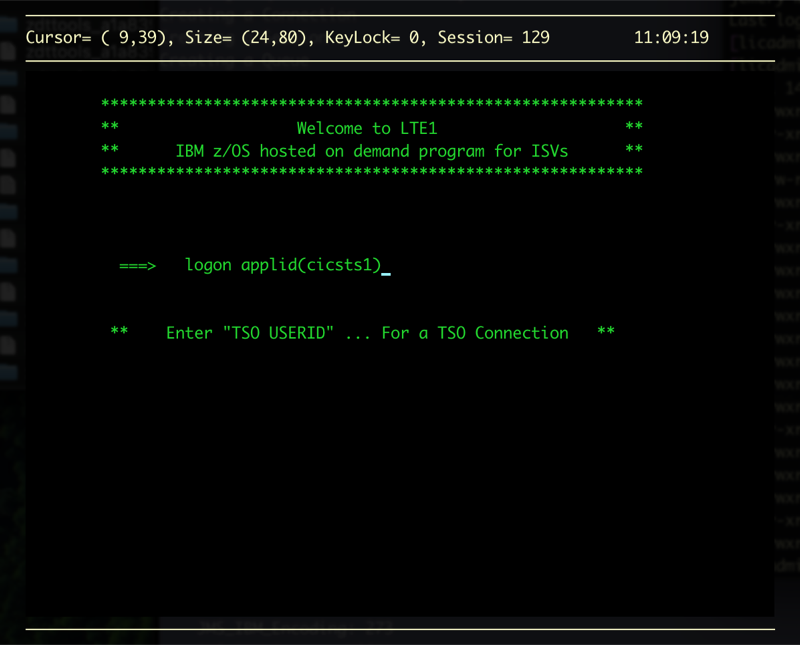
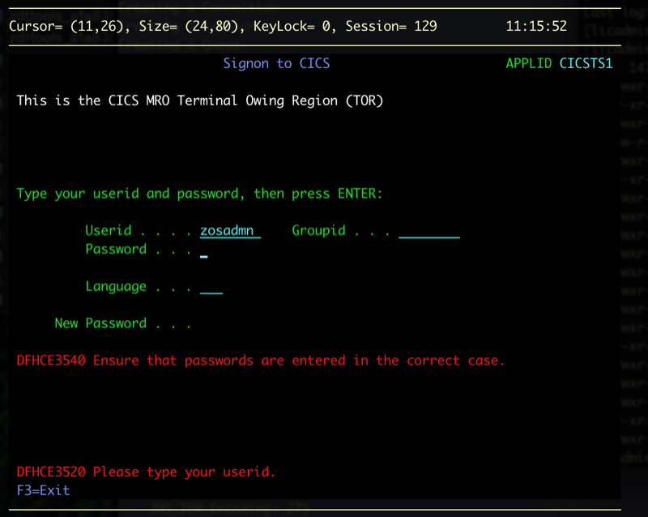
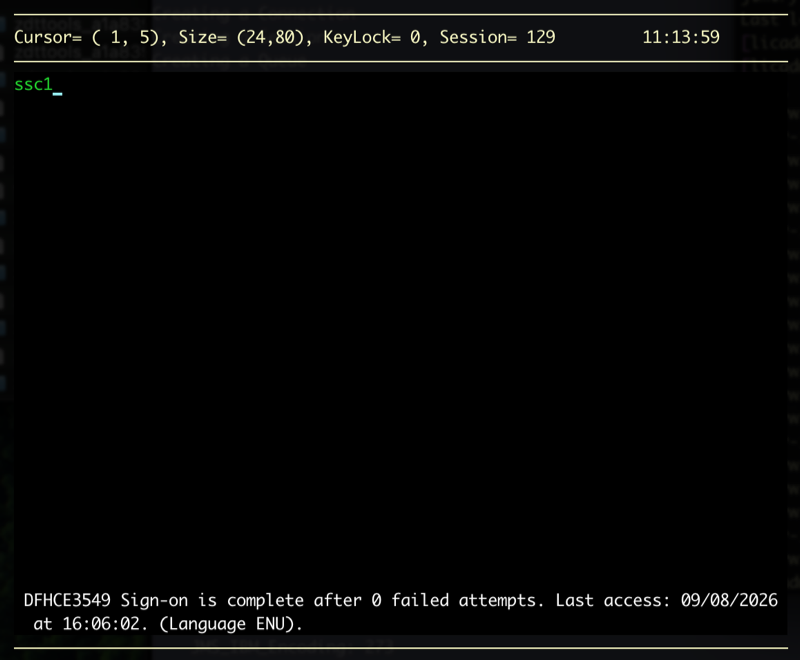
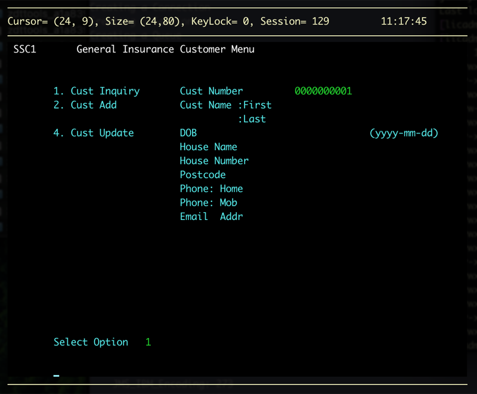
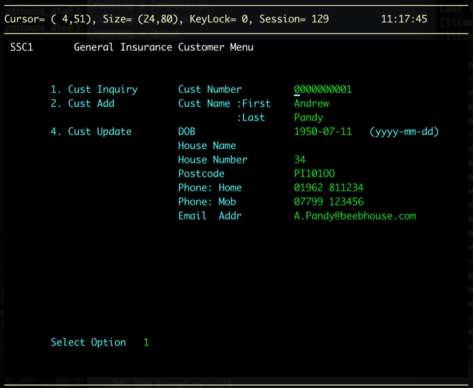

CICS GenApp
The CICS GenApp image is a pre-configured z/OS 3.1 environment with the CICS General Insurance Application (GenApp) installed and ready to use. It is built on top of the z/OS Standard + CICS & Db2 image and is available on TechZone for CICS demonstrations, application modernization walkthroughs, and COBOL application development.
GenApp is a working COBOL application originally developed by the IBM Hursley CICS Development team. It simulates a general insurance company processing customer and policy records — querying, inserting, and deleting records through both a 3270 interface and programmatic APIs.
What's Included
- z/OS 3.1 — See Base z/OS Configuration for the full system layout
- CICS Transaction Server 6.2 — Region pre-configured with CICS System Management Single Server (SMSS), CMCI, and RACF security
- Db2 for z/OS Version 13 — Pre-wired to the CICS region via a
DB2CONNresource for EXEC SQL processing - CICS GenApp — Installed and configured in the
CICSTS1region, with Db2 tables created and CICS resources loaded into the CSD - 3270 interface —
SSC1,SSP1,SSP2,SSP3, andSSP4transactions available on any 3270 terminal connected toCICSTS1 - RACF security — GenApp user profiles and resource authorisations pre-configured
- Autostart — CICS region and Db2 subsystem start automatically at IPL
For the full product list including FMIDs, see Installed Products.
Use Cases
- CICS Transaction Server demonstrations and proof-of-concept
- COBOL application modernization walkthroughs (web services, CICS events, REST APIs)
- CICS-Db2 integration and SQL transaction processing demos
- Workload simulation and business event scenarios
Application Overview
GenApp models a general insurance company with four types of insurance policy — house, motor, commercial, and endowment. The application provides a 3270 menu-driven interface for:
| Function | Description |
|---|---|
| Inquire customer | Look up a customer by customer number |
| Add customer | Create a new customer record |
| Inquire policy | Retrieve a policy record by customer and policy number |
| Add policy | Create a motor, commercial, or endowment policy |
| Delete policy | Remove a policy record |
Policy and customer data is stored in both a VSAM file and a Db2 table.
Accessing GenApp via 3270
Connect a 3270 emulator to your z/OS instance (see Connecting to Your Instance). You will land on the z/OS VTAM logon screen.
Logging on to CICS
Rather than logging on to TSO, connect directly to the CICSTS1 CICS region:
LOGON APPLID(CICSTS1)

You will be prompted for credentials. Enter your user ID and password:
| Field | Value |
|---|---|
| User ID | ZOSADMN |
| Password | (from your TechZone reservation details) |
Note: The password field will not display any characters as you type — this is expected behaviour.

After a successful sign-on you will see the CICS blank screen, ready to accept transactions.
Testing the Application
The following steps walk through a quick end-to-end verification of GenApp to confirm the application, Db2, and VSAM are all working correctly.
-
Log on to CICS — Follow the steps to logon if you haven't already.
-
Open the customer menu — Type
SSC1and press Enter.
-
Inquire on customer 1 — In the Cust Number field enter
1(displayed as0000000001), tab down to Select Option, enter1, and press Enter.
-
The customer record will be returned:

If the record is displayed, GenApp is correctly installed and connected to Db2 and VSAM.
-
Press F3 to exit any menu screen.
Sample Data
The following policies are pre-loaded in the database and can be used for inquiry testing:
| Policy type | Policy number | Customer number |
|---|---|---|
| Motor | 1 | 2 |
| Motor | 2 | 10 |
| Motor | 3 | 5 |
| Endowment | 4 | 8 |
| Endowment | 5 | 3 |
| House | 6 | 4 |
| House | 7 | 6 |
| House | 8 | 9 |
| Commercial | 9 | 5 |
| Commercial | 10 | 1 |
Application Transactions
| Transaction | Description |
|---|---|
LGSE | Initialise counters and temporary storage queues |
SSC1 | Customer details menu (inquire / add / delete) |
SSP1 | Motor policy menu |
SSP2 | Endowment policy menu |
SSP3 | House policy menu |
SSP4 | Commercial property policy menu |
LGCF | Retrieve random customer number from VSAM file |
LGPF | Retrieve policy and customer number from VSAM file |
LGST | Event adapter trigger to update counters |
SSST | Initialise and copy values for dynamic scripting |
Key Configuration Details
| Property | Value |
|---|---|
| CICS region STC | CICSTS1 |
| CICS applid | IYI0AOR1 (AOR) |
| Db2 subsystem ID (SSID) | DBA1 |
| GenApp load library | ZOSADMN.GENAPP.LOAD |
| GenApp CNTL library | ZOSADMN.GENAPP.CNTL |
| GenApp EXEC library | ZOSADMN.GENAPP.EXEC |
| Db2 database ID | GENASA1 |
| User HLQ | ZOSADMN |
| DASD volume | USER01 |
| CMCI port | 10000 |
Verifying the CICS Region is Active
To confirm the CICSTS1 region is up, from a 3270 operator console:
D A,CICSTS1
Or from USS via SSH:
opercmd "D A,CICSTS1"
Then follow the Testing the Application steps above to verify end-to-end connectivity.
Further Reading
- z/OS Standard + CICS & Db2 — Base image that this image extends
- z/OS Standard + CICS — CICS region configuration, CMCI, and Java bundles
- z/OS Standard + Db2 — Db2 subsystem details, JDBC setup, and RACF configuration
- Connecting to Your Instance — VPN, SSH, and 3270 terminal setup
- CICS GenApp on GitHub — Source code and original SupportPac documentation